For a photographer, autumn is also the best season for long exposures. What subject should you pick? How do you make it stand out? Try these tips.
Where does the beauty of autumn long exposures lie?
Show the power of the sea of clouds
Show the softness of water
Show the grandeur of the city
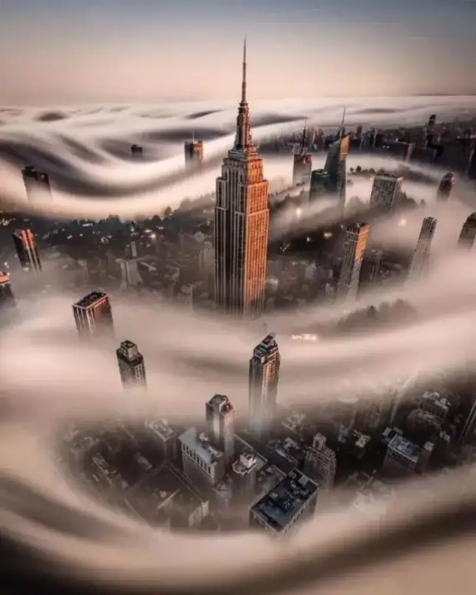
Show the quiet beauty of autumn
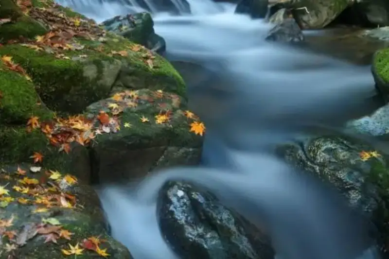
How do you make it stand out?
1. Choose the time
Most of the time your frame comes out a flat white, dull and textureless, because you picked the wrong time. Photography is not only a technical job, it is also a physical one. You must rise early and stay out late.
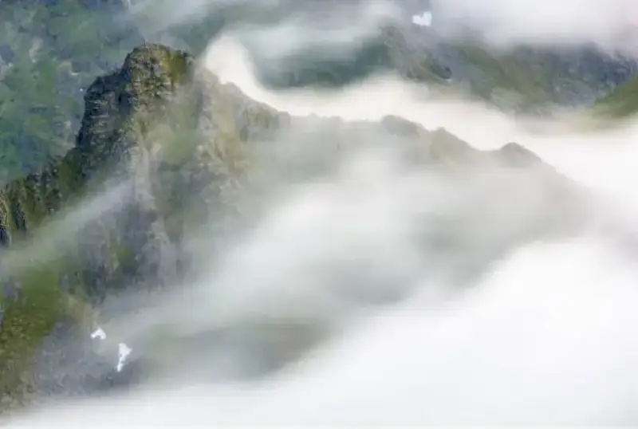
For landscapes, the time you choose matters more than the angle. The angle stays fixed, but the time is a matter of luck. The best time for landscapes is near sunrise and sunset.
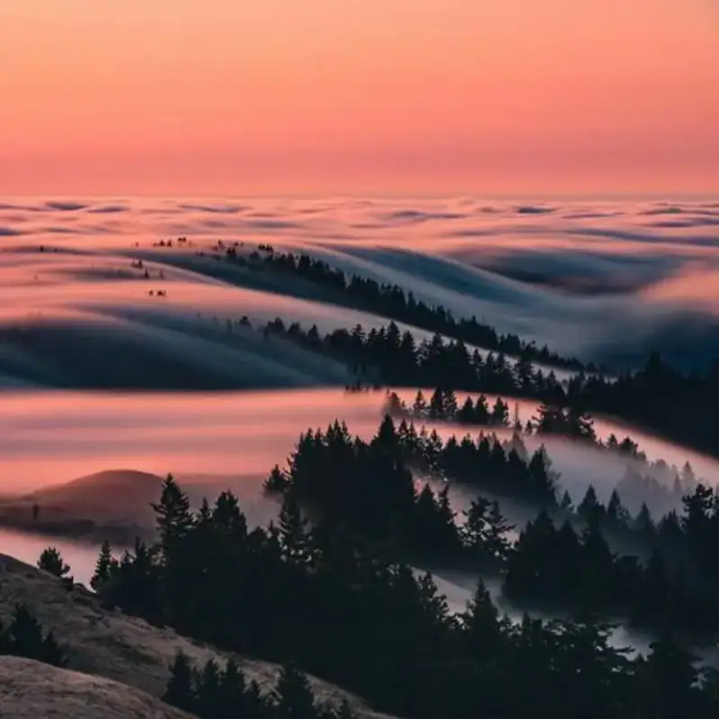
For night scenes, a full moon gives you a clean night sky. But for starry skies, you must avoid the full moon.
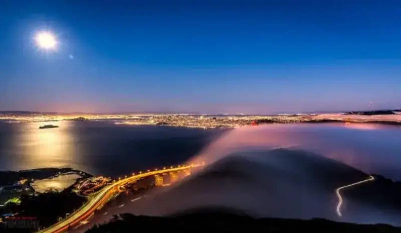
2. Control the shutter speed
To shoot long exposures in daylight, carry ND filters. ND8 and ND1000 are the most used. ND8 is a three-stop reduction, good for sunrise and sunset. ND1000 is a ten-stop reduction, so you can shoot long exposures even in strong light. For unexpected moments, you can also stack shots in post to simulate a long exposure of flowing water.
For flowing water and waterfalls, about 4 seconds usually works.
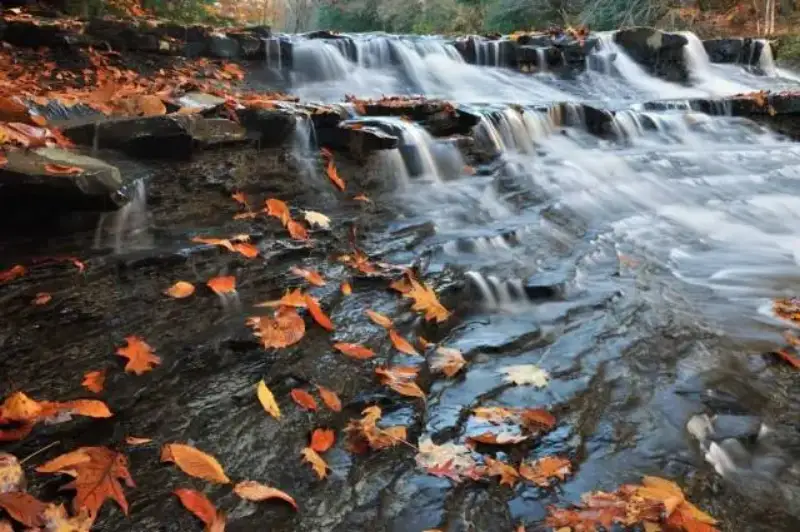
To make the water look misty, hold the shutter at 30 seconds or more.
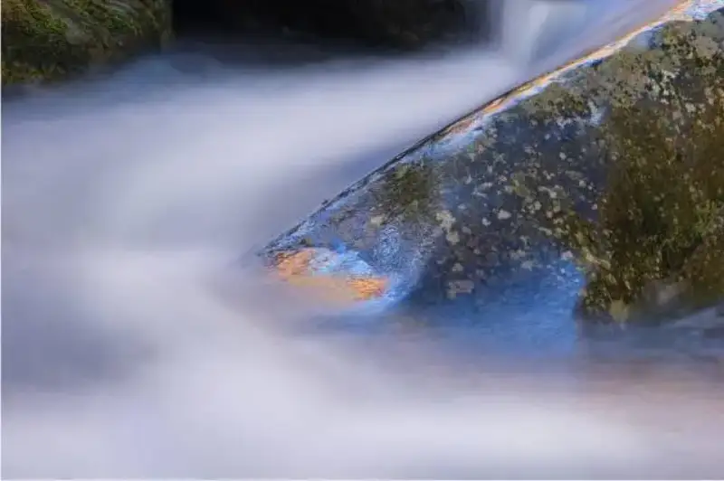
To get that soaring-cloud look, the exposure is even longer, possibly over a minute. Then set the camera to bulb mode.
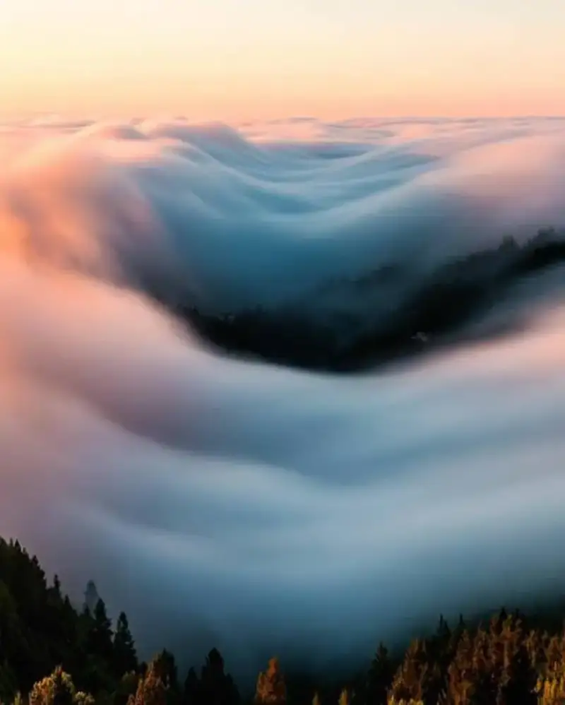
3. Highlight the contrast of motion and stillness
Moving objects and still objects both let you build a contrast of motion and stillness by controlling the shutter speed. For example, a still rock against leaves drifting in the water.
Sometimes you do not need a neutral filter. The shutter setting depends on the speed of the subject. For fast-moving things, a shutter speed of a fraction of a second gives a blurred feel.
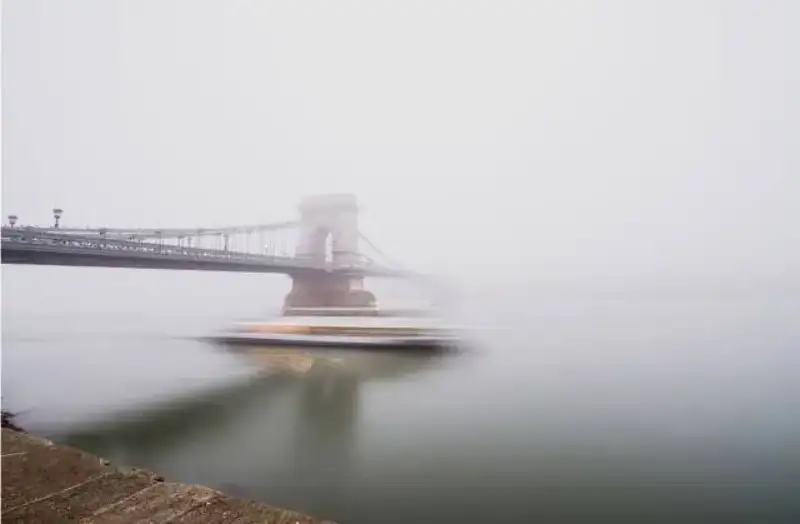
In autumn the tide goes out. Rocks above the water line add a touch to the frame and make a good foreground.
Use a still object as the visual focus, to set off a hazy mood.
4. Find special angles
Look for subjects that stand for autumn, such as yellow leaves to express a rich autumn feel.
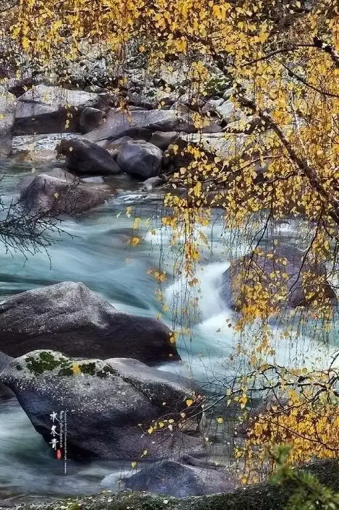
A clean, tidy background simplifies the composition. A dark background sets off the subject.
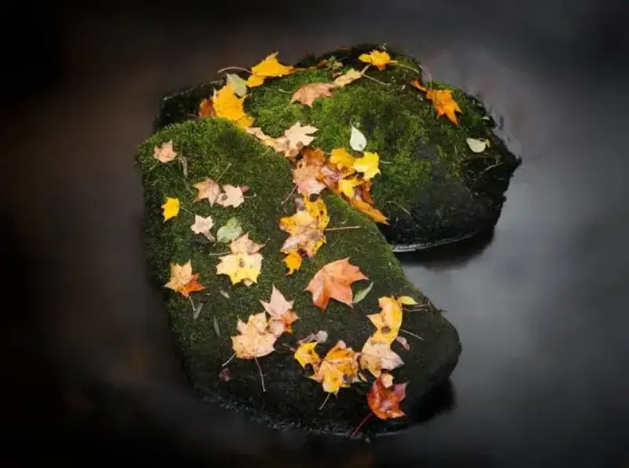
Long exposures often use a wide angle, which strengthens the impact of the frame.
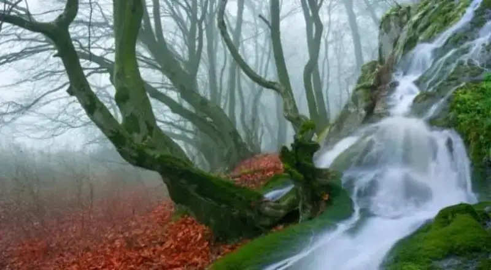
When you compose with a wide angle, add some foreground to balance the frame.
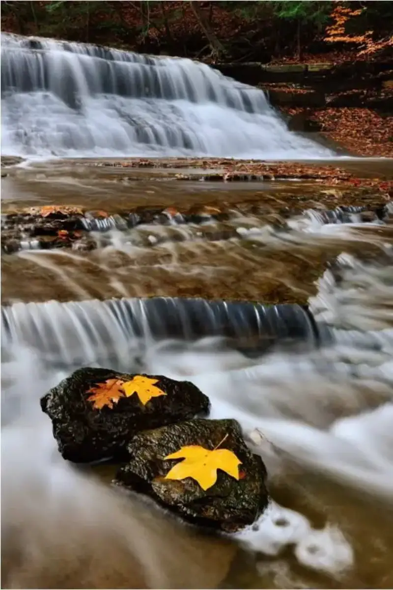
Compose with a foreground so the frame looks full and balanced, and shows the layered depth of the lens. Rocks, wildflowers, wild grass, dead wood, and leaves all work as a foreground.
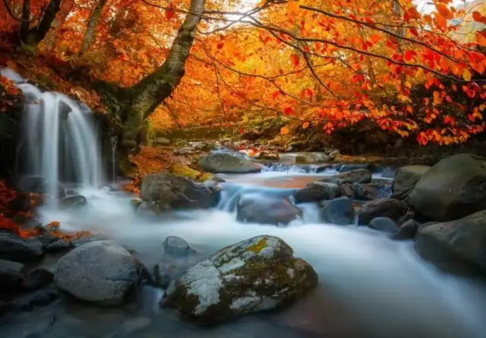
5. Find special subjects
When you choose what to shoot and want your work to stand out, think about four things: angle, technique, subject, and creativity. Go where people do not, and great shots come easier. At the same spot, a different angle, technique, or creativity makes a different result. Use these subjects well, and you bring home a full set of autumn shots.
Sunset
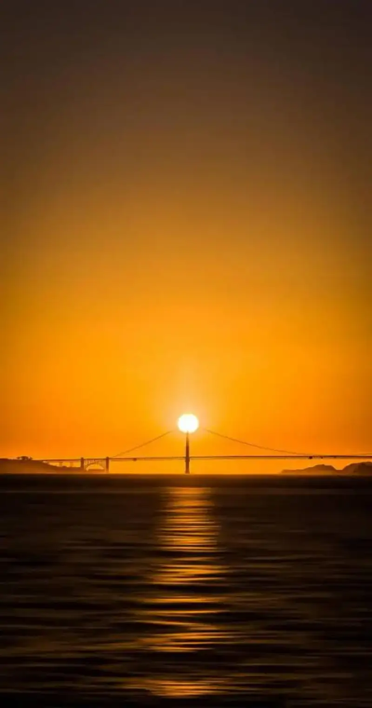
Flowing water
Fallen leaves
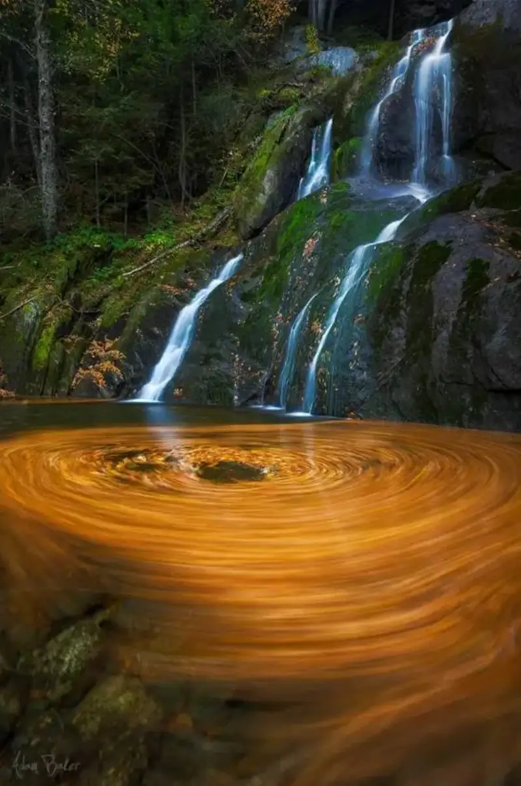
Rocks
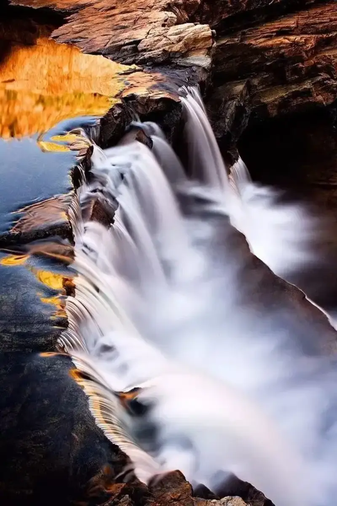